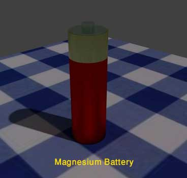

• Construction
• Advantages
• Disadvantages
Sizes And Types Of Mg/Mno2 Batteries
Magnesium is used as anode materials in primary battery because of its high standard potential. It is a light metal. It is also easily available low cost metal. Magnesium/manganese dioxide (Mg/MnO2) battery has twice the service life i.e. capacity of the zinc/manganese dioxide (Zn/MnO2) battery of same size. It has also the ability to retain its capacity, during storage, even at high temperatures. Magnesium battery is very durable and storable since it has always a protective cover which is naturally formed on the surface of the magnesium anode.
The magnesium battery generally loses its storability once it has been partially discharged and that is why it is not very suitable for using in long-term intermittent applications. This is the main reason, why magnesium battery is losing its popularity and lithium battery are occupying its market.
Chemistry of Magnesium Battery
In magnesium primary battery , magnesium alloy is used as anode; manganese dioxide is used as cathode material. But manganese dioxide cannot provide required conductivity to the cathode and that is why acetylene black is mixed with manganese dioxide to achieve required conductivity. Magnesium per-chlorate is used as electrolyte. Barium and lithium chromate are added to electrolyte for preventing corrosion. Magnesium hydroxide is also added to this mixture as buffering agent to improve storability.
The oxidation reaction occurs in the anode is,
The reduction reaction occurs in cathode is,
Overall reaction,
The open circuit voltage, this cell gives around 2 volt but the theoretical value of the cell potential is 2.8 volt.
The chance of corrosion of magnesium is very less even under extreme environmental conditions. Actually raw magnesium reacts with moisture and form a coating of thin film of Mg(OH)2 on its surface. This thin film of magnesium peroxide serves as a corrosion protective layer over the magnesium. In addition to that chromate treatment on magnesium improves this protection to very large extent. But when this protective film of magnesium peroxide is puncher or removed due to discharge of battery , corrosion takes place with formation of hydrogen gas.
This is the basic chemistry of magnesium battery .
Construction of Magnesium Battery
Construction wise a cylindrical magnesium battery cell is similar to a cylindrical zinc carbon battery cell. Here an alloy of magnesium is used as main container of the battery . This alloy is formed by magnesium and small quantity of aluminum and zinc. Here, manganese dioxide is used as cathode material. As the manganese dioxide has poor conductivity, acetylene black is mixed with this to improve its conductivity. This also helps to retain water inside cathode. In this cathode mixture barium chromate is added as an inhibitor, and also magnesium hydroxide is added as a pH buffer. Magnesium per-chlorate with lithium chromate mixed in water is used as electrolyte. A carbon is inserted in the cathode mix as current collector. Kraft papers, absorbed with electrolyte solution are placed in between cathode and anode materials as separators. Special attention is to be given during designing of sealing arrangement in magnesium battery . The sealing of the battery should not be so porous that the moisture inside the battery will be evaporated during storing of the battery and it should not be so nonporous that the hydrogen gas formed during discharge cannot escape from the battery . So the seal of the battery should retain the moisture inside it and at the same time it gives sufficient vent to the hydrogen gas formed during discharge. This can be done by providing a small hole on the top of the plastic seal washed under the Retainer ring. When excess gas comes out from the hole this retainer ring is deformed due to pressure and resulting escaping of the gas.

Generally magnesium anode forms the outer cover of the battery but another construction of magnesium battery is also available where carbon forms the outer container of the battery . Here a typical shaped container is formed from highly conductive carbon. This container is formed in a cylindrical cup shape and one rod like shape is projected from its center as shown in the picture. Anode of the battery is formed by a cylinder or drum of magnesium. The diameter of the anode cylindrical is about half of the carbon cup. The cathode mix is placed inside this anode cylinder and separated from the inner wall of the cylinder by a paper separator. The space between inner surface of the carbon cup and outer surface of the anode cylinder also filled with cathode mix and here also the outer surface of the anode cylinder is separated from cathode mix by a paper separator. The cathode mix is produced by mixing manganese dioxide, carbon black, and small quantity of aqueous magnesium bromide or per-chlorate as the electrolyte. Positive terminal is connected to the end of the carbon cup. The negative terminal is connected to the end of anode drum. The entire system is encapsulated in a crimped tin-plated steel jacket.
Advantage of Magnesium Battery
- It has very good self life; it can be stored for long even under high-temperature. These battery can be stored up to 5 years at the temperature 20°C.
- It has twice capacity compared to equivalent size Leclanche battery .
- Higher battery voltage than zinc-carbon battery .
- Cost is also moderate.
Disadvantages of Magnesium Battery
- Delayed action.(voltage delay)
- Evolution of hydrogen during discharge.
- Heat generated during use.
- Poor storage after partial discharge.
The battery are no longer manufactured commercially.
Sizes And Types Of Mg/Mno2 batteries
| Battery type | Diameter in mm | Height in mm | Weight in gm | Capacity in Ah |
|---|---|---|---|---|
| N | 11 | 31 | 5 | 0.5 |
| B | 19.2 | 53 | 26.5 | 2 |
| C | 25.4 | 49.7 | 45 | 3 |
| 1LM | 22.8 | 84.2 | 59 | 4.5 |
| D | 33.6 | 60.5 | 105 | 7 |
| FD | 41.7 | 49.1 | 125 | 8 |
| No. 6 | 63.5 | 159 | 1000 | 65 |
 by
by